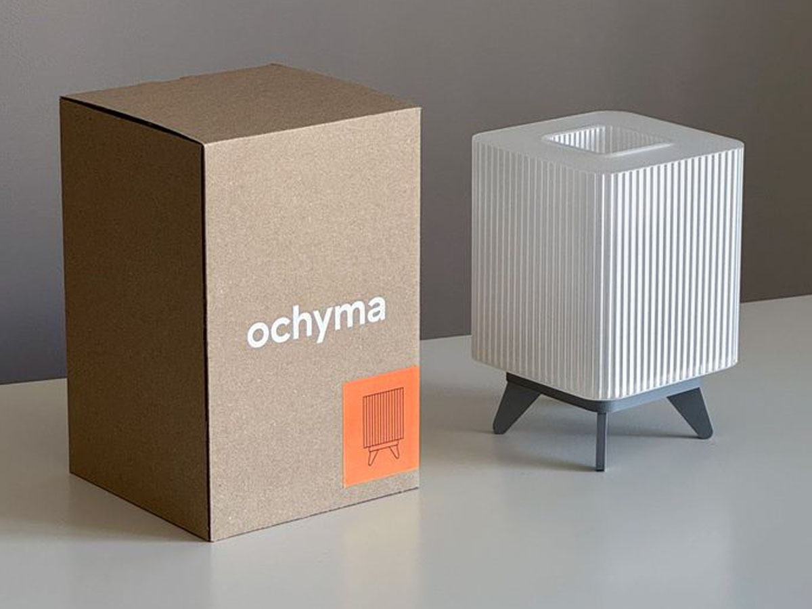
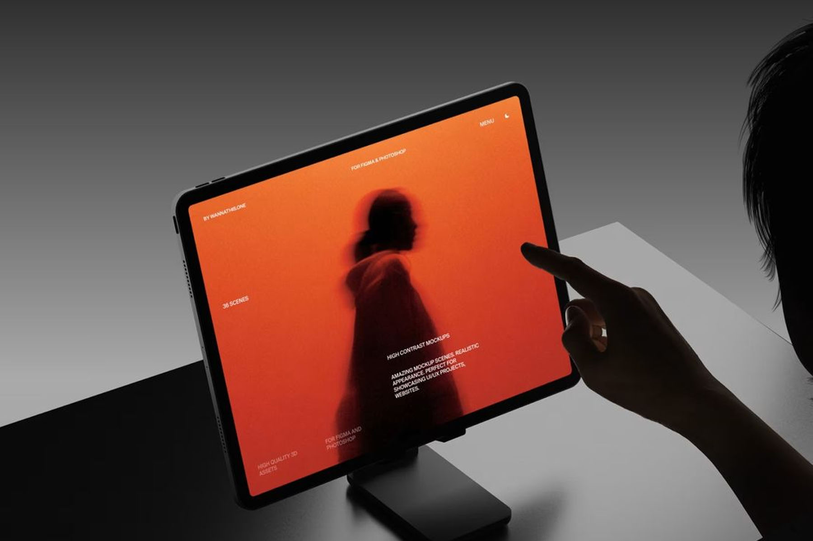

Studio Botto | Branding
Desarrollo de identidad visual para Studio Botto, enfocada en una estética minimalista y contemporánea.
Ver másDesarrollamos soluciones de diseño que integran branding, diseño web y diseño industrial.
Conocer más
Desarrollo de identidad visual para Studio Botto, enfocada en una estética minimalista y contemporánea.
Ver más
Diseño de luminaria con enfoque minimalista para experiencia en espacios de coworking.
Ver más
Diseño de landing para marca especializada en eventos de alta costura.
Ver más
Soy Agustina Hassenruck, geomaker. Me especializo en el desarrollo de marcas y proyectos de diseño que cruzan lo visual, lo digital y lo físico. Trabajo desde una mirada integral, donde el branding, la experiencia de usuario y el diseño de producto se conectan para construir soluciones coherentes y duraderas.
Leer más